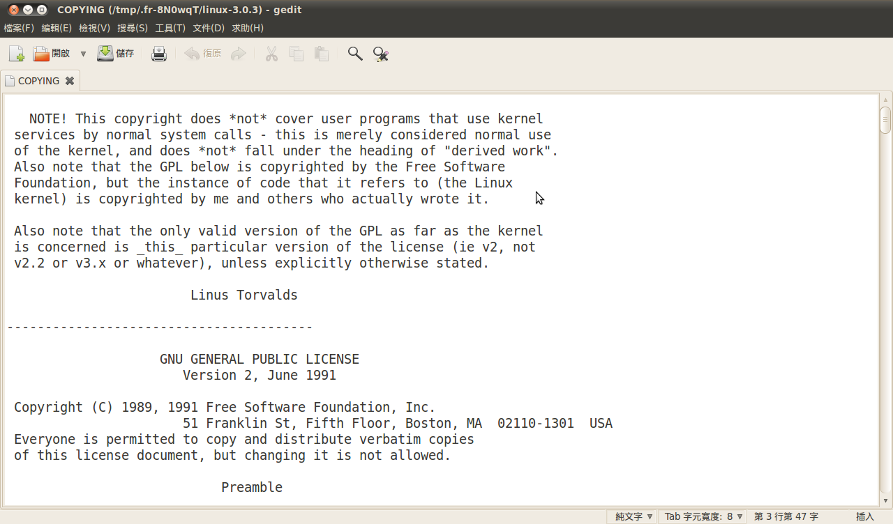

感謝您對「自由軟體鑄造場」的支持與愛護，十多年來「自由軟體鑄造場」受中央研究院支持，並在資訊科學研究所以及資訊科技創新研究中心執行，現已完成階段性的任務。 原網站預計持續維運至 2021年底，網站內容基本上不會再更動。本網站由 Denny Huang 備份封存。
也紀念我們永遠的朋友 李士傑先生（Shih-Chieh Ilya Li）。
也紀念我們永遠的朋友 李士傑先生（Shih-Chieh Ilya Li）。
法律專欄  GPL 條款對於衍生程式的判定標準與其授權拘束性的擴散範圍（上）
GPL 條款對於衍生程式的判定標準與其授權拘束性的擴散範圍（上）
法律源地
 本網站法律源地提供相當多自由軟體授權與法律的資訊，歡迎您閱讀這些資訊。
本網站法律源地提供相當多自由軟體授權與法律的資訊，歡迎您閱讀這些資訊。
GPL 條款對於衍生程式的判定標準與其授權拘束性的擴散範圍（上）
建立日期 2011-09-15 14:21 最近更新在 2012-05-14 13:26
GPL 類別的授權程式，最為人著稱的特性便是其「牽一髮而動全身」的授權拘束性（License Inheritance，註一）。所謂的「授權拘束性」白話來說，指的是當使用者將 GPL 授權的程式碼抄寫到自己的軟體專案時，如果抄寫程度佔專案程式碼的比例很大，或是此一 GPL 授權元件提供了專案的核心功能，並且專案的其他元件在互動上亦無法與其分割，則整個軟體專案便會一體被視為該 GPL 授權元件的衍生著作，嗣後使用者如果再行散布這個軟體專案，便僅能適用 GPL 的授權方式來進行釋出。而由於近年來自由開源軟體元件被產業化利用的比率愈見頻繁，因此授權拘束性所帶來的爭議也愈來愈受到重視，本文便是針對這個議題，先依著作權法的預設說明、再照 GPL 授權條款的文意解釋，接著舉 Linux Kernel 的實際運作狀況佐證，一步步抽絲剝繭的分析 GPL 授權程式在衍生程式方面的判定標準，及此標準在軟體元件的連接關係 (linking) 上，所可能擴散的拘束性範圍。【預先取得原作者同意是合法改作的前提】
依我國著作權法第 28 條的規定：「著作人專有將其著作改作成衍生著作或編輯成編輯著作之權利。」所以、若是軟體元件並非自己從無到有重新撰寫，而是取用他人既有的成果來加以改寫與利用，就必須先取得該元件原始權利人的預先同意才可以進行。類似的規則在美國法是規定在其著作權法第 101 條 17 項 1 款（註二），其述明新作品是基於原作品而另行改作者皆為衍生著作 (A “derivative work” is a work based upon one or more preexisting works.)，然而、在軟體著作這個領域裡，何謂「基於原作品另行改作 (work based on the original work)」的定義與範圍向來有難以清楚界定的難處，這是因為在一個中型、大型的軟體專案裡，各元件彼此間，常常是以互相呼叫、互相存取的方式來協同運作，而不同元件程式碼在撰寫上，也並不一定是各作者基於共同創作的共識下去協力開發的，所以、若非在個案裡就不同元件的「互動與依存關係」來做判定，否則、很難直觀的去辨別各元件間是否真的存有「前後接力、彼此依賴」的緊密連結關係，而可以將整個軟體專案論為哪一個特定元件的衍生著作。
【GPL 擴張了衍生程式的抽象定義與解釋範圍】
由於自由開源軟體皆容許後手得以自行「研究、修改、重製、再散布」該程式，所以自由開源軟體元件的原始著作權人，都已經將這個「容許改作的同意」預先授權給得到程式的後手了，不論是 BSD、MIT、MPL、CDDL，或是 GPL 類別的授權元件都是如此，然而、這些自由開源軟體的授權條款，其在預先釋出程式改作權的同時，也會要求收受程式的後手，必須以遵守條款其他義務性要求 (obligation) 來作為取得合法授權的交換條件！而 GPL 類別的授權元件，其最為人熟知與影響最為深遠的義務性要求，便是如果新的軟體專案內含 GPL 授權元件的程式碼，那原則上就是整個專案 (as a whole) 會被認定為 GPL 授權元件的衍生程式，從而這個軟體專案再釋出時，便必須依照 GPL 條款的各項授權規定，以提供後手程式源碼的方式來進行散布。GPL 授權條款這樣的要求相較於著作權法的預設，是大為擴張了法律原本對於衍生程式的抽象定義與解釋範圍，然而、以授權條款或是契約約定去補充法律規定之不足處，本就是私法行為下契約自由主義所容許的作為。但是、為了避免這樣的擴張機制引發過大的爭議與產生避用 GPL 授權元件的迴避效應，GPL 授權條款也明文表達了一個授權拘束性的例外規定，那就是、具有「獨立性與可區分性（Separate and Independent，註三）」的軟體元件，並不會因為僅與 GPL 授權元件同在一個軟體專案的架構下運作，就被歸類為 GPL 授權元件的衍生著作。所以、若是符合「Separate and Independent」這個例外條件，此時軟體專案便可以被認定為一個統合的聚合作品 (aggregation)，此時散布整個聚合的軟體專案時，就只需要提供該 GPL 授權元件的程式源碼，而不一定要將 GPL 元件的授權拘束性擴及到其他自行編寫且獨立運作的個別元件。那麼、接下來的問題就是，所謂的「獨立性與可區分性」，是不是已經有一個公定標準，或是多數 GPL 授權元件的開發者皆已得到共識的參考範圍？
【Linus Torvalds 認為運作上的依賴性才是衍生關係的最大特徵】
「獨立性與可區分性」的判斷目前並沒有司法判決上統一的公定標準，但是若干的 GPL 著名元件的開發社群，確實有藉由不間斷討論與辯駁的過程，漸漸凝聚共識與統一說法的態勢。舉目前影響力最大的自由開源軟體專案 Linux Kernel 為例，其原始創作人與精神領袖 Linus Torvalds 也曾就這個議題，於 2001 年至 2004 年間，在網路信件往返的討論串裡給過若干的評論與建議（註四），簡要來說、這段評論內容的重點可以歸納為以下三點：
- 以 GPL-2.0 授權條款釋出的 Linux Kernel 確實具有授權拘束性，其他基於 Linux Kernel 所撰寫出來的衍生程式，不論其為驅動程式 (driver) 或是 Kernel 的修補程式 (patch) 皆無例外。
- 其他開發者為 Linux Kernel 所撰寫的 Kernel 模組 (Kernel Module) 以及修補程式，其著作權利歸屬於個別的創作者，然若是因為運作上的高度依賴性特徵，而被認定為 Linux Kernel 的衍生程式，則再釋出時便必須依照 GPL-2.0 的遊戲規則來進行散布。
- Linus Torvalds 舉長篇小說來做比喻，若讀者需要讀完上篇才能看懂中篇，看完上篇、中篇才能看懂下篇，那麼中篇與下篇皆為前篇的衍生著作；而相若於此、假設某個特定元件是針對 Linux Kernel 進行撰寫，並且不依附於 Linux Kernel 之上便全無運作的功用，那麼該元件便不具單獨存立 (stand-alone) 的獨立性，從而也就必須被歸類為 Linux Kernel 的衍生程式，而併以 GPL-2.0 提供程式源碼的授權方式向後散布。
其後 Linus Torvalds 更將他這樣的授權態度編寫進 Linux Kernel 的說明檔案裡（註五）成為正式的聲明。依著這份聲明，Linus Torvalds 認為其他軟體元件透過一般 system call 的方式來呼叫 Linux Kernel 的功能，並不會讓這個元件直接被定義為 Linux Kernel 的衍生程式，因為這樣的互動方式僅是透過一個既成的介面 (interface) 來與 Linux Kernel 產生交流，因此僅是一種單純利用 (use the program) Linux Kernel 功能的互動方式，而不代表此元件與 Linux Kernel 之間具有「不可分割運作的衍生關係」。自此之後、許多軟體社群的成員認為其他元件與 GPL 授權元件的互動關係原則上有兩種，一種是基於 GPL 程式改作 (work based on the program) 的衍生關係，此時 GPL 授權程式的授權拘束性會擴散至衍生程式；另一種是其他元件單純利用 (work using the program) GPL 程式進行功能展現的獨立關係，而若是判定是獨立關係的話，則 GPL 授權程式的授權拘束性不會擴散到這些獨立元件，從而這些獨立元件在與 GPL 授權程式合併散布時，便僅需要提供與 GPL 程式產生互動關係時的呼叫程序與安裝步驟方面的資訊，而不需要提供此元件所有核心部份的程式源碼。

▲ 圖1 Linux Kernel 源碼第一層目錄下 COPYING 檔案內含的授權聲明
【動態／靜態連結表彰的是元件間可分割與不可分割的互動關係】
而由於「單純利用 GPL 程式的獨立關係」與「基於 GPL 程式改作的衍生關係」是較為法律面的用語，從這個時期之後、部份的自由開源軟體專案開發者，開始以技術面較為慣用的「動態連結 (dynamic link)」與「靜態連結 (static link)」等用語來舖陳 GPL 授權拘束性的內容。動態連結指的是程式元件間「浮動的、可取代的，無必然連結性」的互動關係，若軟體專案裡失去某個 GPL 授權元件的連結關係，但該專案仍具有大部份的執行功能，僅部份的功能表現因失去此一 GPL 授權元件，而顯得沒有完全版本那麼優異，那麼這大抵便是動態連結的互動關係；而靜態連結指的是程式元件之間「必然的、無可取代的，有固定連結性」的互動關係，若軟體專案裡失去該 GPL 授權元件的連結關係，則該專案喪失大部份或是核心的執行功能，那這大抵便是靜態連結的互動關係。其實不論是動態連結或是靜態連結，都不是專有的法律用語或是技術詞彙，但因為這二個名詞言簡意賅並且是軟體開發者慣用並可實作的技術方法，所以漸漸的就約定成俗成為了辨別 GPL 程式授權拘束性的慣用方法，許多開發者以「元件間動態連結的互動方式」，來對應「單純利用 GPL 程式的獨立關係」，另以「元件間靜態連結的互動方式」，來對應「基於 GPL 程式改作的衍生關係」，然而、這究竟是一種較為直觀且簡略的比擬方式，事實上在 GPL 授權條款的本文，並沒有任何一個章節有登載動態連結與靜態連結這樣的辨別條件與定義內容，所以動態連結、靜態連結這樣簡要的判斷條件，是可以做為 GPL 授權拘束性初階的基本辨別方式，但是在大型商業用軟體專案或是元件互動性複雜的個案上，建議還是應該回歸 GPL 授權條款的原始定義，依元件實際互動的方式來做細節上的評判（註六）。
本文下篇的文章連接頁面如右：https://www.openfoundry.org/tw/legal-column-list/8447-the-license-inheritance-bounds-of-gnu-gpl-02
註一：相類的名詞包括早期以批判角度立論的「擴散效應 (tainting effect)」、「感染特性 (viral effect)」，至 Patrick J. Moran 於 2003 年美國太空總署 (NASA) 的研究報告中，改以較中庸而不帶評議立場的「授權攫取性 (License Capture)」稱之，本文選用 Lawrence Rosen 所推廣之「License Inheritance」一詞，以表彰此一特性原始的立意良善，其導引 GPL 授權元件的後續版本皆需「承繼」原始著作權利人預設的方式，以提供程式源碼的方式來釋出衍生作品，但實際施行上、也對使用者帶來若干不得不去遵從的「拘束」，故稱之為「授權拘束性」。
註二：A “derivative work” is a work based upon one or more preexisting works, such as a translation, musical arrangement, dramatization, fictionalization, motion picture version, sound recording, art reproduction, abridgment, condensation, or any other form in which a work may be recast, transformed, or adapted. A work consisting of editorial revisions, annotations, elaborations, or other modifications, which, as a whole, represent an original work of authorship, is a “derivative work”.
註三：這樣的條款文字出現在 GPL-2.0 第 2 條 第 2 項：”If identifiable sections of that work are not derived from the Program, and can be reasonably considered independent and separate works in themselves, then this License, and its terms, do not apply to those sections when you distribute them as separate works.”；以及 GPL-3.0 第 5 條 第 2 項：”A compilation of a covered work with other separate and independent works, which are not by their nature extensions of the covered work, and which are not combined with it such as to form a larger program, in or on a volume of a storage or distribution medium, is called an “aggregate” if the compilation and its resulting copyright are not used to limit the access or legal rights of the compilation's users beyond what the individual works permit. Inclusion of a covered work in an aggregate does not cause this License to apply to the other parts of the aggregate.”。
註四：原始討論串內容已因空間轉址而失聯，但資訊亦已被大量轉錄至許多 Linux Kernel 相關網站，如右列連結即為一例：https://linuxmafia.com/faq/Kernel/proprietary-kernel-modules.html
註五：說明檔案名為 COPYING，其儲放於 Linux Kernel 程式源碼第一層面錄下：「NOTE! This copyright does *not* cover user programs that use kernel services by normal system calls - this is merely considered normal use of the kernel, and does *not* fall under the heading of “derived work”.」
註六：程式元件間互動與溝通的方式有許多不同的變體，部份自由開源軟體社群的開發者認為，元件透過網際網路的方式來呼叫 GPL 授權元件，應可以避開 GPL 授權拘束性的擴散範圍，甚至進一步主張透過 unix socket，或是 pipe 的方式來進行溝通，也可能產生一樣的除外效果；然而、若是依 GPL 授權條款的文義與目的性解釋，此種方法仍然有一定風險會被視為 GPL 義務性要求的規避，而產生後續法律爭議的風險。例如 2007 年末新編撰的 AGPL-3.0 (GNU AFFERO GENERAL PUBLIC LICENSE version 3)，便是針對網路連結的呼叫方式來進行補強，其將網路連結 AGPL-3.0 衍生元件的方式定義為程式散布的方式之一，遂大幅度的擴張了 AGPL-3.0 衍生程式的授權拘束性範圍。
您也許有興趣閱讀以下文章:
- GPL 條款對於衍生程式的判定標準與其授權拘束性的擴散範圍（下） - 2011-09-15
自由軟體鑄造場電子報 : 第 181 期 基於 KVM 與 libvirt 的虛擬化叢集系統－Debian 篇
標籤: Linux, Kernel, GPL 區隔機制, Open Source, GPL2, 法律專業, GPL, GPL3, Copyleft, Coder 必讀, 源碼混入, 授權拘束性,
分類: 法律專欄
自由軟體鑄造場 製作 最佳瀏覽狀態：IE7或Firefox2.0以上 (建議使用Firefox) ‧ 解析度1024*768
E-Mail：contact@openfoundry.org Address：台北市南港區研究院路2段128號 中央研究院資訊科學研究所 . 隱私權條款. 使用條款
E-Mail：contact@openfoundry.org Address：台北市南港區研究院路2段128號 中央研究院資訊科學研究所 . 隱私權條款. 使用條款
評論
於另一open source projecct-Free RTOS是使用modified GNU General Public License，於其licen se EXCEPTION TEXT:Linking FreeRTOS statically or dynamically with other modules is making a combined work based on FreeRTOS. Thus, the terms and conditions of the GNU General Public License cover the whole combination.
不論動態/靜態聯結皆受GPL規範，表示此 license較本文介紹的來得 嚴格?
Free RTOS License的作法頗為有趣， 但也不能說必然比GPL來得嚴格 ，大致上是說：
1、Free RTOS License完全承襲GPL-2.0全文的設計，但加上自己的「除 外條款(Exception Text)」，故其已經不是以G PL-2.0來授權所使用的軟體，而是以「 修改GPL-2.0授權條款的模式」，來使用軟體 。
2、在除外條款裡，Free RTOS License律定，不論靜態連 結或是動態連結的方式，來使用F ree RTOS License授權的程式，都會 形成衍生著作，從而必須受到Fr ee RTOS License使用條款的限制， 「除非」這些連結的方式，是透過 既成的FreeRTOS應用程式 介面(FreeRTOS API interface)為之，並且 其功能性為獨立、程式碼方面沒有 直接抄寫FreeRTOS程式本 體，且運作上沒有和FreeRT OS背後的商業公司Real Time Engineers Ltd產生競業上的衝突。這些除 外條款的全文，如右列連結下緣所 示：https://www.freertos.org/license.txt。
所以就是說，單單從使用靜態連結 或是動態連結的方式，來利用Fr eeRTOS就形成衍生著作這點 ，似乎比原始的GPL-2.0來得嚴，但只要嚴格遵守只透過 既定API的呼叫，即少有衍生方 面的疑慮，這種作法又近似於較寬 鬆的LGPL-2.1，所以我想Free RTOS License的設計，大概是覺 得GPL-2.0在模糊地帶的解釋空間過大，所 以作了自己的權衡機制，也就說， 不論動態、靜態，只要是連結利用 就啟動授權拘束性，然而，若是能 證明謹遵既成API呼叫的互動方 式，則就可以脫離授權拘束方面的 認定。
一些看法分享給您。